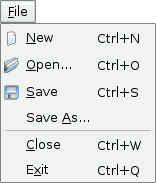

We are now ready to code the Spreadsheet application's main() function:
#include <QApplication>
#include "mainwindow.h"
int main(int argc, char *argv[])
{
QApplication app(argc, argv);
MainWindow mainWin;
mainWin.show();
return app.exec();
}This main() function is a little bit different from those we have written so far: We have created the MainWindow instance as a variable on the stack instead of using new. The MainWindow instance is then automatically destroyed when the function terminates.
With the main() function just shown, the Spreadsheet application provides a single main window and can handle only one document at a time. If we want to edit multiple documents at the same time, we could start multiple instances of the Spreadsheet application. But this isn't as convenient for users as having a single instance of the application providing multiple main windows, just as one instance of a web browser can provide multiple browser windows simultaneously.
We will modify the Spreadsheet application so that it can handle multiple documents. First, we need a slightly different File menu:
File|New creates a new main window with an empty document, instead of reusing the existing main window.
File|Close closes the current main window.
File|Exit closes all windows.
In the original version of the File menu, there was no Close option because that would have been the same as Exit. The new File menu is shown in Figure 3.16.

This is the new main() function:
int main(int argc, char *argv[])
{
QApplication app(argc, argv);
MainWindow *mainWin = new MainWindow;
mainWin->show();
return app.exec();
}With multiple windows, it now makes sense to create MainWindow with new, because then we can use delete on a main window when we have finished with it to save memory.
This is the new MainWindow::newFile() slot:
void MainWindow::newFile()
{
MainWindow *mainWin = new MainWindow;
mainWin->show();
}We simply create a new MainWindow instance. It may seem odd that we don't keep any pointer to the new window, but that isn't a problem since Qt keeps track of all the windows for us.
These are the actions for Close and Exit:
void MainWindow::createActions()
{
...
closeAction = new QAction(tr("&Close"), this);
closeAction->setShortcut(QKeySequence::Close);
closeAction->setStatusTip(tr("Close this window"));
connect(closeAction, SIGNAL(triggered()), this, SLOT(close()));
exitAction = new QAction(tr("E&xit"), this);
exitAction->setShortcut(tr("Ctrl+Q"));
exitAction->setStatusTip(tr("Exit the application"));
connect(exitAction, SIGNAL(triggered()),
qApp, SLOT(closeAllWindows()));
...
}The QApplication::closeAllWindows() slot closes all of the application's windows, unless one of them rejects the close event. This is exactly the behavior we need here. We don't have to worry about unsaved changes because that's handled in MainWindow::closeEvent() whenever a window is closed.
It looks as though we have finished making the application capable of handling multiple windows. Unfortunately, a hidden problem is lurking: If the user keeps creating and closing main windows, the machine might eventually run out of memory. This is because we keep creating MainWindow widgets in newFile() but we never delete them. When the user closes a main window, the default behavior is to hide it, so it still remains in memory. With many main windows, this can be a problem.
The solution is to set the Qt::WA_DeleteOnClose attribute in the constructor:
MainWindow::MainWindow()
{
...
setAttribute(Qt::WA_DeleteOnClose);
...
}This tells Qt to delete the window when it is closed. The Qt::WA_DeleteOnClose attribute is one of many flags that can be set on a QWidget to influence its behavior.
Memory leaking isn't the only problem that we must deal with. Our original application design included an implied assumption that we would have only one main window. With multiple windows, each main window has its own recently opened files list and its own options. Clearly, the recently opened files list should be global to the whole application. We can achieve this quite easily by declaring the recentFiles variable static so that only one instance of it exists for the whole application. But then we must ensure that wherever we called updateRecentFileActions() to update the File menu, we must call it on all main windows. Here's the code to achieve this:
foreach (QWidget *win, QApplication::topLevelWidgets()) {
if (MainWindow *mainWin = qobject_cast<MainWindow *>(win))
mainWin->updateRecentFileActions();
}The code uses Qt's foreach construct (explained in Chapter 11) to iterate over all the application's windows and calls updateRecentFileActions() on all widgets of type MainWindow. Similar code can be used for synchronizing the Show Grid and Auto-Recalculate options, or to make sure that the same file isn't loaded twice.
Applications that provide one document per main window are said to be SDI (single document interface) applications. A common alternative on Windows is MDI (multiple document interface), where the application has a single main window that manages multiple document windows within its central area. Qt can be used to create both SDI and MDI applications on all its supported platforms. Figure 3.17 shows the Spreadsheet application using both approaches. We explain MDI in Chapter 6.